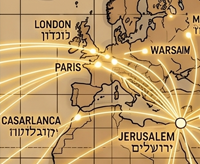
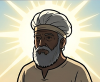
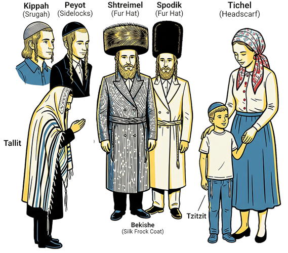
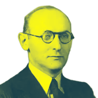

01
A faith or a people?
Who is a Jew?
The question of "Who is a Jew?" is one of the most complex debates in Jewish history, involving religious law, secular identity, and modern civil statutes. Because Judaism is an ethno-religion, the definition varies depending on whether you are looking through a legal, religious, or personal lens.
Ultimately, it is a tension between Am Yisrael (the People of Israel) as a biological family and Torat Yisrael (the Law of Israel) as a religious covenant.
Traditional Religious Definition (Halakha)
According to Halakha (Jewish law), followed by Orthodox and Conservative movements, a person is Jewish if their mother was Jewish at the time of their birth (Matrilineal Descent), or if they have undergone a formal conversion process recognized by a rabbinic court (Bet Din).
Modern Denominational Shifts
In the 20th century, the definition expanded. Reform and Reconstructionist Judaism recognize Patrilineal Descent if the child is raised with a Jewish identity. Some secular Jews define identity through culture, history, or ethnicity rather than religious observance.
The Secular State Perspective (Law of Return)
The State of Israel's Law of Return (1950) grants citizenship to anyone with at least one Jewish grandparent or a Jewish spouse. This protects those facing antisemitism, even if the Rabbinate doesn't recognize them for religious purposes like marriage.

02
Diaspora & Communities
A scattered People

Jewish identity transcends geography. From ancient Israel to the modern diaspora, Jews have maintained distinct communities while spreading across every continent. The major branches—Ashkenazi, Sephardic, Mizrahi, and many others—each carry unique traditions, languages, and histories.
Ashkenazi Jews
Central & Eastern Europe. Descendants of medieval Rhine Valley communities who expanded into Poland, Lithuania, Russia. By 1900 they constituted ~90% of world Jewry. Language: Yiddish. Culture: Hasidic movement, Klezmer, yeshiva traditions. ~11 million today.
Sephardic Jews
Spain & Portugal diaspora. Expelled from Iberia in 1492, dispersed to Ottoman Empire, North Africa, Amsterdam, Americas. Language: Ladino (Judæo-Spanish). The Sephardic Rite differs in prayer and practice. ~1-2 million today.
Mizrahi Jews
Middle East & North Africa. Indigenous communities predating the Arab conquest—never went through European diaspora. Languages: Judæo-Arabic, Judæo-Persian, Aramaic. Distinctive culinary and prayer traditions. ~4-5 million today.
Yemenite Jews
Arabia—possibly since Solomon. One of the oldest and most isolated communities. Unique Torah reading, handwritten scrolls, silverwork. Operation Magic Carpet (1949–50) airlifted nearly the entire community to Israel. ~400,000 today.
Iraqi / Babylonian Jews
Mesopotamia—oldest continuous community since 586 BCE. Produced the Babylonian Talmud (the most authoritative rabbinic text). Baghdad was 1/3 Jewish in 1900. Most emigrated to Israel after 1948. ~200,000 today.
Chinese Jews
Kaifeng & Shanghai. Kaifeng community traced to Silk Road merchants (c. 1000 CE). Shanghai became a refuge for 20,000+ Jews fleeing Nazis in 1930s. Small but resilient community.
Latin American Jews
Argentina, Brazil, Mexico. Argentina (~200k) is the largest community in the region. Formed by 19th-20th century migration. Integration into local culture while maintaining Jewish identity.
Mountain Jews (Juhuro)
Caucasus (Azerbaijan, Dagestan). Descendants of Persian Jews who settled in the mountains in the 5th century. Unique language: Juhuri (Judæo-Tat). Rich tradition of craftsmanship and distinct liturgy.
Italkim (Italian Jews)
Italy-since the Roman Republic. One of the oldest continuous communities in Europe. Neither Ashkenazi nor Sephardic, they maintain the unique "Nusach Italki" (Italian Rite). Centers: Rome, Venice, Florence.
Beta Israel (Ethiopian Jews)
Ethiopia-practiced isolated Judaism for 2,000 years. Traced to Queen of Sheba and King Solomon. Maintained ancient Torah (Orit). Most were airlifted to Israel in 1980s-90s. ~160,000 today.
Indian Jews
Bene Israel, Cochin, Baghdadi Jews. Arrived in waves over 2,000 years. Thrived in a culture of religious tolerance. Centers: Mumbai, Kochi, Kolkata. Most emigrated to Israel after 1948.
Samaritans (Shomronim)
Mount Gerizim & Holon. Not strictly "Jews" in the rabbinic sense but share common Israelite ancestry. Follow only the Torah (Pentateuch). Ancient, tightly-knit community of ~800 people.

03
Genealogy & Priestly Code
The Cohens

The name Cohen (or Kahn, Cohn, Kahanoff, etc.) represents one of the world's largest extended families—all descendants of the ancient Jewish priestly class and specifically of Aaron, the brother of Moses. In biblical times, the Kohanim (priests) served in the Temple and held sacred duties. After the Temple's destruction in 70 CE, while they lost their priestly functions, the genealogical line persisted.
The Priestly Code
Kohanim had exclusive rights to perform Temple sacrifices, blessings, and sacred rituals. Their role ended with the Temple's destruction but cultural status persisted.
Genetic Legacy
The Cohen Modal Haplotype (a specific DNA pattern) appears in ~55% of men surnamed Cohen, and is rare in the general population—strong evidence of patrilineal descent from the ancient priesthood.
Global Cohens Today
From Leonard Cohen (musician) to Sacha Baron Cohen (actor) to countless scholars, scientists, and artists—the Cohen name spans every continent and profession, united by an ancient genealogy.
04
Jewish Life in the 21st Century
Today
Today's Jews are a global diaspora shaped by internet, migration, intermarriage, and diverse belief systems. Geographic and cultural communities continue to thrive while new forms of Jewish identity emerge.
Digital Diaspora
The internet has created a borderless Jewish community. From digital yeshivas to Jewish ancestry groups, technology allows for global connection and the preservation of rare dialects like Ladino and Jiddisch.
Interfaith & Diversity
Rising rates of intermarriage and the inclusion of diverse voices (LGBTQ+, Jews of Color) are redefining what it means to be a Jewish family. Pluralism is becoming the hallmark of the 21st-century diaspora.
Revitalization
A new generation is rediscovering ancient traditions—through food, art, and environmental activism (Eco-Judaism). This "New Jew" movement blends heritage with progressive values.
In the beginning...
There were words
Judaism begins with text, but not with text alone. The Bible, rabbinic debate, legal interpretation, poetry, folklore, and mystical commentary form a layered tradition where reading is itself a religious act.
The Bible
The Bible
The Tanakh is the Hebrew Bible, consisting of Torah (Law), Nevi'im (Prophets), and Ketuvim (Writings). The Torah, or Five Books of Moses, is the foundation of Jewish law, story, and identity.
Talmud
Talmud
The Talmud is the great record of rabbinic argument: Mishnah plus Gemara.
Zohar
Zohar
The Zohar is the central work of Kabbalah.
A Small Map of the Library
The Jewish library is not one book in a straight line. It is a conversation between law, narrative, prophecy, poetry, wisdom, argument, and mystical imagination.
Jewish tradition and modern scholarship answer the authorship question differently. Tradition often speaks in terms of revelation and named prophets or sages; academic study usually sees long processes of composition, editing, transmission, and canonization.
Pentateuch
The Greek name for the Torah's five books; in Jewish life, simply Torah.
Genesis
Creation, covenant, family conflict, Abraham and Sarah, Jacob, Joseph, and the descent to Egypt.
Exodus
Slavery, liberation, Sinai, law, wilderness, and the political birth of Israel as a people.
Psalms
Prayer-poetry for fear, grief, gratitude, kingship, exile, and praise.
Job
A fierce argument about suffering, innocence, divine justice, and the limits of explanation.
Jonah
A compact prophetic tale about evasion, mercy, repentance, and resentment.
Ecclesiastes
Wisdom literature that faces vanity, mortality, work, pleasure, and the search for meaning.
Talmudic Pages
Not chapters but layered pages: law, story, challenge, answer, objection, and counter-objection.
Rituals, Observances, Holidays & Terms
Jewish time is shaped by weekly rest, seasonal festivals, fast days, life-cycle rituals, food practices, and words that carry centuries of memory across languages and communities.
Shabbat (Sjabbes)
The weekly Sabbath, from Friday evening to Saturday night: candles, kiddush, challah, rest, prayer, family meals, and a deliberate pause from ordinary work.
Pesach
Passover, the spring festival of liberation from Egypt. The seder meal retells Exodus through matzah, bitter herbs, wine, questions, songs, and symbolic foods.
Purim
A joyful holiday around the Book of Esther: reading the megillah, costumes, charity, gifts of food, noise for Haman, and a carnival mood.
Rosh Hashanah
The Jewish New Year and beginning of the High Holy Days. Marked by the shofar, prayer, self-examination, apples and honey, and hopes for a sweet year.
Yom Kippur
The Day of Atonement, the most solemn day of the Jewish calendar: fasting, confession, forgiveness, repair, and the closing Neilah service.
Sukkot
The harvest festival of booths, recalling wilderness wandering. Families eat in a sukkah and wave the lulav and etrog.
Hanukkah
An eight-day winter festival remembering the Maccabean revolt and rededication of the Temple, marked by lighting the hanukkiah, songs, games, and fried foods.
Kashrut
Jewish dietary law: kosher and non-kosher animals, separation of meat and dairy, ritual slaughter, and everyday discipline around eating.
Mitzvah
A commandment or sacred obligation. In everyday speech it can also mean a good deed, but its root meaning is covenantal responsibility.
Bar / Bat Mitzvah
The coming-of-age moment when a young Jew becomes responsible for mitzvot, often marked by Torah reading, prayer leadership, study, and celebration.
Brit Milah
The covenant of circumcision, traditionally performed on the eighth day for Jewish boys, linking family, body, ancestry, and covenant.
Tzedakah
Often translated as charity, but closer to justice or obligation: giving because the community and the vulnerable have a claim on us.
Movements & Practice
Across geography and history, Jews developed different interpretations of Torah, liturgical practices, and degrees of observance. From Orthodoxy to Reform, from Hasidic mysticism to secular humanism, Jewish religious life spans a wide spectrum.
Orthodox
Emphasizes strict adherence to Torah and Talmudic law. Subdivisions include Haredi (ultra-Orthodox), Modern Orthodox, and Hasidic movements. Maintains traditional gender roles, dietary laws, Sabbath observance, and study of sacred texts.
Conservative
Seeks balance between traditional Jewish law and modern life. Originated in 19th-century Germany; strong in America. Allows rabbinical flexibility on interpretation while maintaining core observances. Often called "Masorti" (traditional) in Israel.
Reform
Emphasizes ethical monotheism and personal interpretation of Torah. Began in early 19th-century Europe; most liberal denomination. Women and LGBTQ+ are fully included in religious life. Focus on universal values and social justice.
Reconstructionist
Judaism
Views Judaism as an evolving civilization, not revealed law. Emphasizes community, creativity, and democratic decision-making in spiritual matters. Incorporated Jewish feminism early and pioneered egalitarian worship.
Secular
Many Jews are secular or cultural—identifying as Jewish through ethnicity, history, and social/ethical commitments rather than religious belief. Supports Jewish continuity through language (Yiddish, Hebrew), art, activism, and community, not theology.
Neturei Karta
A fringe ultra-Orthodox group known for their vocal opposition to Zionism and the State of Israel on religious grounds. They believe a Jewish state can only be established by the Messiah.
Attire & Religious Dress

Jewish dress codes vary widely by community, level of observance, and tradition — from the barely visible to the immediately recognizable.
Kippah (Yarmulke)
Kippah (Yarmulke)
A small head covering worn by Jewish men as a sign of reverence before God. Style varies greatly: knitted (srugah) among Modern Orthodox and Religious Zionist men; plain black velvet among Haredi Orthodox; suede or leather among many traditional Jews. Worn at all times by the observant, during prayer only by others — or not at all.
Peyot (Sidelocks)
Peyot (Sidelocks)
Long, uncut sidelocks grown by many Orthodox and Hasidic Jewish men, rooted in the biblical prohibition against "rounding the corners of the head" (Leviticus 19:27). Style varies from short curls kept tucked behind the ear to dramatically long, spiraling locks worn in front. Particularly prominent among Yemenite and Hasidic Jews.
Shtreimel & Spodik
Shtreimel & Spodik
Large, circular fur hats worn by married Hasidic men on Shabbat and Jewish holidays. The shtreimel (flat, wide brim of sable or other fur) is associated with Polish and Galician Hasidic courts; the spodik (tall and cylindrical) with Lithuanian and Polish Hasidim. These hats were originally 18th-century Eastern European aristocratic dress, adopted as festive Jewish attire.
Tzitzit (Fringes)
Tzitzit (Fringes)
Knotted fringes attached to the four corners of a garment, commanded in Numbers 15:38–40. Worn under clothing as a tallit katan (small prayer shawl) by observant men throughout the day; sometimes deliberately left visible hanging below the shirt. A full-size tallit (prayer shawl) with tzitzit is worn during morning prayer services.
Tzniut (Modest Dress)
Tzniut (Modest Dress)
The concept of modesty (tzniut) governs dress standards in observant communities, particularly for women. This typically means covered elbows, knees, and collarbone. Married Orthodox women cover their hair with a sheitel (wig), tichel (headscarf), or hat. In Haredi communities, norms are stricter; in Modern Orthodox communities, there is more variation. Non-Orthodox Jews generally observe no specific dress codes.
Bekishe & Kapote
Bekishe & Kapote
Long black coats worn by Hasidic men, rooted in 18th-century Eastern European dress. The bekishe (silk frock coat) is worn on Shabbat and holidays; the kapote (a more everyday long coat) is worn on weekdays. White shirts, dark trousers, and black shoes complete the ensemble. Black is not a sign of mourning — it simply reflects the historic dress of Polish nobility, preserved as tradition.
literature
The People of the Book
Jewish literature spans sacred texts, Talmudic debates, mystical poetry, secular modernism, and contemporary fiction. From the narrative cycles of Genesis and Exodus in the Hebrew Bible (Tanakh) to 21st-century novelists, Jews have been obsessed with interpretation, storytelling, and ethical inquiry.
The Bible
The Hebrew Bible (Tanakh) is a collection of 39 books spanning law, prophecy, history, and poetry. Written over a millennium, it forms the foundation of Jewish law, ethics, and narrative identity.
Chaim Potok
20th-century American Jewish novelist. The Chosen, My Name Is Asher Lev—explore identity, faith, art, and modernity within Orthodox communities. Accessible, deeply humanistic exploration of Jewish inner life.

Isaac Bashevis Singer
Yiddish novelist (1902–1991). Won Nobel Prize in Literature. The Family Moskat, Shadows on the Hudson—vivid depictions of Polish Jewish shtetl life, mysticism, and American immigrant experience. Master of supernatural and philosophical storytelling.
Philip Roth
American master of realism and postmodernism. Portnoy's Complaint, Sabbath's Theater. Explores Jewish identity, sexuality, American ambition, and the tension between tradition and desire. Controversial, brilliant.
Etgar Keret
Israeli contemporary master of the short story. Minimalist, darkly comic, profound. Captures modern Israeli life, war, alienation, love. Adaptable to film. Suddenly, a Knock on the Door. Voice of 21st-century Hebrew literature.
Amos Oz
Israeli literary giant (1939–2018). A Tale of Love and Darkness, My Michael. Explored Israeli identity, kibbutz life, Arab-Jewish relations, and the human condition. Nobel Prize nominee. Profound influence on Hebrew literature and Israeli intellectual discourse.
Art & Design
From Tabernacle to Transcendence
Judaism historically discouraged representational art (to avoid idolatry), yet Jewish artists have become titans of modernism, surrealism, abstraction, and contemporary practice. The 20th century unleashed Jewish creative genius across all visual media.
Marc Chagall
Russian-French modernist (1887–1985). Fused Cubism with folkish, mystical Jewish imagery. I and the Village, biblical subjects, Vitebsk memories. Used color emotionally. Stained glass, murals, sculpture. A bridge between tradition and modernity.
Mark Rothko
American abstract expressionist (1903–1970). Huge floating color fields—emotional, transcendent. Often called "color field painting." Works evoke spiritual states. Late works: darker, more tragic. Suicide in his studio; his legacy is introspective melancholia.
Anish Kapoor
Artists like Anish Kapoor (Indian father, Iraqi Jewish mother) pushed sculpture into abstraction and emotional terrain. Known for monumental public works like Cloud Gate, his work explores the sublime, the void, and the relationship between viewer and object.
Graphic Design
Saul Bass revolutionized film title sequences and corporate identity. His minimalist, high-contrast style (seen in Exodus, Vertigo, and Anatomy of a Murder) defined the visual language of mid-century cinema. Other titans include El Lissitzky and Paul Rand.
Architecture
Jewish architects have redefined modern skylines. Frank Gehry's deconstructivism (Guggenheim Bilbao) and Daniel Libeskind's emotional geometries (Jewish Museum Berlin) are global landmarks. Tel Aviv's "White City" remains the world's largest collection of Bauhaus-style buildings, built by German Jewish refugees.
Superman, Comics & Graphic Novels
Superman, created by Jerry Siegel and Joe Shuster, represents the immigrant experience: an outsider saving the world under a secret identity. Jewish artists also pioneered the modern graphic novel, from Will Eisner’s seminal A Contract with God to Art Spiegelman’s Pulitzer Prize-winning Maus.
Music
From Temple Psalms to Modern Pop
Jewish music evolved from ancient Temple liturgy through medieval liturgy, Hasidic ecstasy, folk traditions, to dominating popular music. From klezmer to classical to rock to hip-hop—Jews have shaped global musical culture.
Liturgical & Sacred Music
Liturgical & Sacred Music
Cantorial chanting (hazzan), medieval piyyutim (religious poetry), Ashkenazi and Sephardic choral traditions. Synagogue music maintains ancient modal structures. Composers like Ernest Bloch (Symphony, Schelomo) created modern works infused with Jewish themes.
Nigun & Hasidic Music
Nigun & Hasidic Music
Wordless melodies (nigun) expressing spiritual longing. Hasidic courts (Satmar, Chabad, Breslov) developed distinctive ecstatic musics. Chabad niggunim are world-famous. Songs of lamentation (kinot) and ecstatic celebration define Hasidic spirituality.
Klezmer
Klezmer
Eastern European Jewish folk music tradition. Associated with celebrations, weddings, and mourning. Features virtuosic violin (often imitating the human voice), clarinet, accordion. Revived in 1970s-80s; influenced jazz, world music.
Matisyahu
Matisyahu
Reggae-influenced Jewish rapper/singer (b. 1979). Religious identity + hip-hop culture. Albums: Youth, Live at Stubb's. Bridge between Hasidic spirituality and contemporary urban music. Pioneered "spiritual hip-hop."
The Beastie Boys
The Beastie Boys
Legendary hip-hop trio. Incorporated Jewish cultural references, fought antisemitism, supported Tibetan rights. Pioneering voice of Jewish cool, humor, activism.
Jazz Masters & Classical Composers
Jazz Masters & Classical Composers
Leonard Bernstein, Benny Goodman, George Gershwin, Itzhak Perlman, Kurt Weill, Phillip Glass.
Pop & Rock Icons
Pop & Rock Icons
Bob Dylan, Lou Reed, Leonard Cohen, Amy Winehouse, Lenny Kravitz
Israeli music
Israeli music
Contemporary Israeli musician fusing electronic, rock, world-music influences. Eurovision Songfestival winners. Yaron Chernyak. Ness & Stilla.
Cinema & Acting
Screen & Story
Jews built Hollywood. From the silent era to today, Jewish filmmakers, producers, and actors have defined cinema language, narrative form, and cultural expression. Comedy, drama, social consciousness—the Jewish voice is foundational.
The Marx Brothers
Groucho, Chico, Harpo (b. Manfred, Leonard, Julius Marx). Revolutionary comedians—absurdist, anarchic, subversive of authority. Duck Soup, A Night at the Opera. Defined comedic timing, wordplay, and irreverence.
Woody Allen
Writer-director-actor (b. Allen Konigsberg). Neurotic, intellectual humor. Annie Hall, Manhattan, Hannah and Her Sisters. Explored relationships, Judaism, New York anxiety. Controversial personal life.
Steven Spielberg
Master storyteller—adventure (Indiana Jones), war (Saving Private Ryan), Holocaust (Schindler's List). Used cinema for moral witness. Schindler's List became definitive Holocaust film. Producer, director, mogul. Jewish identity central to work.
Stanley Kubrick
Perfectionist master of form. A Clockwork Orange, 2001: A Space Odyssey, The Shining. Explored violence, power, human nature. Reclusive, legendary. Complex relationship with Jewish identity in his philosophical works.
Titans of the Screen: Iconic Actors
From the Golden Age to contemporary Hollywood, Jewish actors have redefined performance. Icons include Dustin Hoffman, Paul Newman, Kirk Douglas, and Elizabeth Taylor, alongside modern stars like Scarlett Johansson, Natalie Portman, Harrison Ford, Joaquin Phoenix, Daniel Day-Lewis, Gal Gadot, and Adam Sandler.
Jewish Storytelling on Screen
Jewish filmmakers have created essential films examining identity, diaspora, and trauma. The Holocaust has become a central subject (Lanzmann's Shoah, Agnieszka Holland's Europa Europa). Israeli directors (Ari Folman—Waltz with Bashir, Barak Oshri) grapple with war and memory. American Jewish directors explore family dysfunction and neurosis as universal human truths.
Medicine & Technology
Knowledge & Discovery
Jewish thinkers have advanced mathematics, physics, medicine, computer science, and more—often transforming global knowledge while also navigating cultural and political upheaval.
Mathematics & Physics
Jewish scientists such as Albert Einstein, Eugene Wigner, and Emmy Noether revolutionized modern physics and abstract algebra. Their work helped build relativity, quantum theory, and the mathematical foundations of modern science.
Medicine & Public Health
Contributors like Jonas Salk, Rosalyn Yalow, and Gertrude Elion transformed vaccines, diagnostic medicine, and drug development. Their breakthroughs saved millions of lives and shaped global health systems.
Technology & Computing
From John von Neumann and Norbert Wiener to modern tech founders, Jewish innovators helped create computing, cybernetics, and information theory—the foundations of the digital age.
Biology & Chemistry
Scientists like Ada Yonath and Aaron Ciechanover won Nobel Prizes for structural biology and chemistry. Jewish research continues to shape genetics, molecular biology, and pharmaceutical science.
Ancient Hatred in Modern Forms
Dark Currents
Antisemitism is the world's oldest hatred. It has transformed across centuries—from religious persecution to racial pseudoscience to modern conspiracy theories. In the 21st century, it persists in radicalized forms, including jihadist ideology and troubling left-wing alliances.
Religious Antisemitism (Medieval & Early Modern)
For centuries, Christians blamed Jews for the death of Jesus (the "Christ-killer" accusation). This led to pogroms, massacres, forced conversions, and expulsions. Blood libels—false accusations of ritual murder—fueled violence. Ghettos confined Jews and stripped them of rights.
Racial Antisemitism (19th-20th Century)
Pseudo-scientific racism portrayed Jews as a racial threat. Protocols of Elders of Zion (1903)—a forged document—fabricated a Jewish conspiracy for world domination. Used by Nazis and continues circulating today. Provided intellectual cover for industrial genocide.
Conspiracy Theories & Banking Myths
Perennial antisemitic canard: "Jews control the banks/media/government." Rooted in medieval restrictions forcing Jews into finance. Contemporary versions target: Rothschilds, Goldman Sachs, Hollywood studios, mainstream media. Used to blame Jews for economic crises, wars, social ills.
Islamic Radical Antisemitism
While Islam historically coexisted with Jews, modern radical jihadism weaponizes religious texts (misinterpreted Qur'anic verses) against Jews. Hamas covenant, Hezbollah manifesto explicitly call for destruction of Israel and Jews. Used to justify terrorism targeting Israeli civilians and diaspora Jews.
Left-Wing Antisemitism
Paradoxical but dangerous: Some progressive activists conflate anti-Zionism with antisemitism, or use Israel-Palestine conflict to promote antisemitic tropes. Alliances with Islamist groups (BDS movement, campus activism) sometimes enable antisemitism. Jewish dissidents within left movements become scapegoated.
Left-Islam Political Alliance
In Western countries, progressive activists increasingly ally with Islamist organizations. Both groups oppose "Western imperialism" and "Zionism." This creates uncomfortable coalitions where antisemitism is tolerated as anti-colonial rhetoric. Jewish concerns dismissed as "privileged." Blurs lines between legitimate criticism of Israel and antisemitism.
Terrorism & Radicalization: 2001-2026
The post-9/11 era saw a sharp rise in jihadist terrorism with often explicit antisemitic content. Attacks frequently targeted Western cities, with Jewish communities disproportionately affected:
9/11 as Watershed (2001)
Al-Qaeda's attacks shifted global terrorism paradigm. Subsequent jihadist attacks—Madrid (2004), London 7/7 (2005), Mumbai (2008)—often included antisemitic ideology. Jewish institutions and synagogues became security concerns across Western world.
European Murder-Attacks (2002-2004)
Assassinations of Islam-critics Pim Fortuyn (2002) and filmmaker Theo van Gogh (2004) highlighted tensions in Europe. Van Gogh's killer left a note threatening the politician Ayaan Hirsi Ali and containing antisemitic rhetoric. Revealed intersection of Islamic violence and antisemitic ideology.
Terror Wave Across Europe (2004-2017)
Madrid train bombing (2004): 191 dead. Moscow theater siege (2002): 166 dead. Brussels attacks (2016): 35 dead. Berlin Christmas market (2016): 12 dead. Manchester concert bombing (2017): 22 dead. All attacks contained antisemitic rhetoric or targeted Jewish communities. Jewish communities institutionalized security protocols.
Campus Antisemitism & BDS
Boycott, Divestment, Sanctions (BDS) movement—ostensibly anti-Israel—often crosses into antisemitism. Jewish students report harassment. Palestinian flags displayed alongside antisemitic symbols. University campuses become sites of Jewish exclusion under guise of anti-Zionism. Left-wing faculty sometimes endorse these movements.
Social Media & Viral Antisemitism (2010s-2020s)
Online platforms amplify ancient tropes. Conspiracy theories go viral. Holocaust denial thrives. Following October 7, 2023, antisemitic incidents exploded: "From the river to the sea" (call for Israel's erasure), Nazi imagery at pro-Palestinian protests, doxxing of Jewish activists, swastikas painted on synagogues.
9/11 as Watershed (2001)
Al-Qaeda's attacks shifted global terrorism paradigm. Subsequent jihadist attacks—Madrid (2004), London 7/7 (2005), Mumbai (2008)—often included antisemitic ideology. Jewish institutions and synagogues became security concerns across Western world.
European Murder-Attacks (2002-2004)
Assassinations of Islam-critics Pim Fortuyn (2002) and filmmaker Theo van Gogh (2004) highlighted tensions in Europe. Van Gogh's killer left a note threatening the politician Ayaan Hirsi Ali and containing antisemitic rhetoric. Revealed intersection of Islamic violence and antisemitic ideology.
Terror Wave Across Europe (2004-2017)
Madrid train bombing (2004): 191 dead. Moscow theater siege (2002): 166 dead. Brussels attacks (2016): 35 dead. Berlin Christmas market (2016): 12 dead. Manchester concert bombing (2017): 22 dead. All attacks contained antisemitic rhetoric or targeted Jewish communities. Jewish communities institutionalized security protocols.
Campus Antisemitism & BDS
Boycott, Divestment, Sanctions (BDS) movement—ostensibly anti-Israel—often crosses into antisemitism. Jewish students report harassment. Palestinian flags displayed alongside antisemitic symbols. University campuses become sites of Jewish exclusion under guise of anti-Zionism. Left-wing faculty sometimes endorse these movements.
Social Media & Viral Antisemitism (2010s-2020s)
Online platforms amplify ancient tropes. Conspiracy theories go viral. Holocaust denial thrives. Following October 7, 2023, antisemitic incidents exploded: "From the river to the sea" (call for Israel's erasure), Nazi imagery at pro-Palestinian protests, doxxing of Jewish activists, swastikas painted on synagogues.
October 7 Fallout: Unprecedented Antisemitic Spike
Following Hamas's October 7, 2023 attack on Israel and Israel's subsequent military response in Gaza, antisemitic incidents reached historic highs:
Antisemitic Incidents Surge
USA: 3,000+ reported antisemitic incidents in 2024 (vs. ~2,000 annual average). France: 1,000+ incidents in Oct-Dec 2023 (9x normal rate). UK, Germany, Canada, Australia: All report record-breaking numbers. Swastikas, death threats, physical assaults on visibly Jewish people.
Campus Chaos & Jewish Students Targeted
US colleges: Jewish students report fearing for safety. "Zionist go back to Europe" chants. Exclusion from student groups. Doxxing campaigns. Some campuses saw pro-Palestinian encampments with antisemitic signs. Faculty sometimes sided with protesters, dismissing Jewish concerns as "oppressor discourse."
Street-Level Harassment & Violence
Jewish people visibly wearing kippahs, Stars of David, or Holocaust memorials reported harassment, assaults. Pro-Palestinian protests sometimes devolved into antisemitic mob violence. In Paris, Berlin, London, Amsterdam: Jewish communities increased personal security measures.
Left-Islam Alliance Under Scrutiny
Pro-Palestinian movements aligned with Islamist organizations. Both framed Israel as "colonizer" and Jews as "settlers." This framing enabled antisemitism to hide under anti-colonialism. Jewish progressives within these movements faced accusations of betrayal or "false consciousness" for defending Jewish concerns.
Global Diaspora Fractures
Jewish communities worldwide divided: some defend Israel's military response, others criticize it strongly. Families split. Jewish organizations accused of not doing enough to prevent antisemitism; others accused of being too pro-Israel. Unprecedented polarization and intracommunal tension over identity, politics, and morality.
Antisemitic Incidents Surge
USA: 3,000+ reported antisemitic incidents in 2024 (vs. ~2,000 annual average). France: 1,000+ incidents in Oct-Dec 2023 (9x normal rate). UK, Germany, Canada, Australia: All report record-breaking numbers. Swastikas, death threats, physical assaults on visibly Jewish people.
Campus Chaos & Jewish Students Targeted
US colleges: Jewish students report fearing for safety. "Zionist go back to Europe" chants. Exclusion from student groups. Doxxing campaigns. Some campuses saw pro-Palestinian encampments with antisemitic signs. Faculty sometimes sided with protesters, dismissing Jewish concerns as "oppressor discourse."
Street-Level Harassment & Violence
Jewish people visibly wearing kippahs, Stars of David, or Holocaust memorials reported harassment, assaults. Pro-Palestinian protests sometimes devolved into antisemitic mob violence. In Paris, Berlin, London, Amsterdam: Jewish communities increased personal security measures.
Left-Islam Alliance Under Scrutiny
Pro-Palestinian movements aligned with Islamist organizations. Both framed Israel as "colonizer" and Jews as "settlers." This framing enabled antisemitism to hide under anti-colonialism. Jewish progressives within these movements faced accusations of betrayal or "false consciousness" for defending Jewish concerns.
Global Diaspora Fractures
Jewish communities worldwide divided: some defend Israel's military response, others criticize it strongly. Families split. Jewish organizations accused of not doing enough to prevent antisemitism; others accused of being too pro-Israel. Unprecedented polarization and intracommunal tension over identity, politics, and morality.
Modern Antisemitism: Key Characteristics
Weaponized Anti-Zionism: Criticism of Israeli policy blurs into denial of Jewish self-determination. "Zionists" becomes synonym for "Jews." Double standards applied—Israel criticized while other nations' far worse conduct ignored.
Conspiracy Theories: "Jews orchestrated Oct 7 attack" or "Israel allowed it to justify genocide." Echoes of medieval blood libels—blaming Jews for violence against themselves.
Religious Antisemitism (Radical Islam): Qur'anic misinterpretations portray Jews as subhuman enemies. Hadiths cherry-picked to justify violence. "Kill the Jews hiding behind rocks" hadith weaponized in Hamas propaganda.
Diaspora Vulnerability: Jews scattered globally face attacks when Israeli-Palestinian tensions escalate. Jewish communities held collectively responsible for Israeli government actions. Forced to choose: defend Israel publicly (risking accusations of disloyalty) or stay silent (risking accusations of cowardice).
Intersectionality Weaponized: Some progressive frameworks position Jews as "oppressors" (too white, too privileged) vs. Palestinians as pure victims. Ignores Jewish history, MENA Jews, Jewish trauma, Jewish diversity. Enables antisemitism under guise of social justice.
Historical Timeline
From Antiquity to Modern Era
Jewish history spans from the patriarchs of ancient Canaan to the global diaspora of today. Key events: kingdoms and exiles, creativity and persecution, resilience and transformation.
Jewish Communities Across the Globe
Global Diaspora
A visual overview of the major Jewish communities throughout history and across the globe.
Something about
Israel.
Iets over
Israël.
You've seen the protests. You've read the tweets. You've watched the news. But have you ever actually talked to an Israeli? This page is for people who want to think, not just feel.
Je hebt de protesten gezien. De tweets gelezen. Het nieuws gevolgd. Maar heb je ooit echt gesproken met een Israëliër? Deze pagina is voor mensen die willen nadenken, niet alleen voelen.
Key Facts
Because Truth matters.
Omdat de waarheid ertoe doet.
Jews have been in the land for over 3,000 years — continuously.
Joden leven al meer dan 3.000 jaar ononderbroken in dit land.
Not "settlers who arrived in 1948." There has been a Jewish presence in what is now Israel since roughly 1000 BCE, documented by archaeology, Roman records, Byzantine records, and Arab chronicles alike.
Geen "kolonisten die in 1948 aankwamen." Er is een Joodse aanwezigheid in wat nu Israël is sinds ongeveer 1000 v.Chr., gedocumenteerd door archeologie, Romeinse verslagen, Byzantijnse bronnen en Arabische kronieken.
Over half of Israeli Jews are Mizrahi — refugees from Arab countries.
Meer dan de helft van de Israëlische Joden is Mizrahi — vluchtelingen uit Arabische landen.
More than 850,000 Jews were expelled or fled from Arab nations between 1948 and 1972. Their families are from Iraq, Yemen, Egypt, Morocco, Libya, Iran. Calling all Israelis "European colonizers" erases them completely.
Meer dan 850.000 Joden werden verdreven of vluchtten uit Arabische landen tussen 1948 en 1972. Hun families komen uit Irak, Jemen, Egypte, Marokko, Libië, Iran. Alle Israëliërs "Europese kolonisatoren" noemen, wist hen volledig uit.
Israel is the only democracy in the Middle East with full civil rights for all citizens.
Israël is de enige democratie in het Midden-Oosten met volledige burgerrechten voor alle burgers.
Arab Israeli citizens vote, sit in the Knesset, serve as judges on the Supreme Court, and run hospitals. This doesn't mean everything is perfect. But it means something real.
Arabisch-Israëlische burgers stemmen, zitten in de Knesset, zijn rechter bij het Hooggerechtshof en leiden ziekenhuizen. Dit betekent niet dat alles perfect is. Maar het betekent wel iets wezenlijks.
"From the river to the sea" means removing 7 million Jews.
"Van de rivier tot de zee" betekent de verdrijving van 7 miljoen Joden.
Between the Jordan River and the Mediterranean Sea lives the entire State of Israel. That slogan, taken literally, calls for the elimination of the world's only Jewish state — not a two-state solution.
Tussen de Jordaan en de Middellandse Zee ligt de gehele staat Israël. Die slogan, letterlijk genomen, roept op tot de vernietiging van 's werelds enige Joodse staat — geen tweestatenoplossing.
Gaza was governed by Hamas, not Israel, since 2007.
Gaza werd sinds 2007 bestuurd door Hamas, niet door Israël.
Israel withdrew from Gaza completely in 2005. Hamas then won elections and violently seized control. Gaza has been under Hamas administration — a designated terrorist organization — for nearly two decades.
Israël trok zich in 2005 volledig terug uit Gaza. Hamas won daarna verkiezingen en greep gewelddadig de macht. Gaza stond bijna twee decennia lang onder Hamas-bestuur — een aangewezen terroristische organisatie.
Israel has more Nobel laureates per capita than any Arab country combined.
Israël heeft meer Nobelprijswinnaars per hoofd van de bevolking dan alle Arabische landen samen.
A country of 9 million has produced 14 Nobel Prize winners. It also has one of the world's highest rates of scientific publication, startup creation, and university enrollment per capita.
Een land van 9 miljoen mensen heeft 14 Nobelprijswinnaars voortgebracht. Het heeft ook een van de hoogste percentages wetenschappelijke publicaties, startups en universitaire inschrijvingen per hoofd ter wereld.
Indigenous
3,000 years.
That's what indigenous
means.
3.000 jaar.
Dat is wat inheems
betekent.
The word "indigenous" has a definition. By any international standard — UN or otherwise — Jews are indigenous to the land of Israel. Here's what the record shows.
Het woord "inheems" heeft een definitie. Naar elke internationale maatstaf — VN of anderszins — zijn Joden inheems in het land Israël. Dit is wat de bronnen laten zien.
The United Monarchy under David and Solomon is documented in the Hebrew Bible, Egyptian records, and Assyrian inscriptions, including the Tel Dan Stele — which explicitly names the "House of David."
De Verenigde Monarchie onder David en Salomo is gedocumenteerd in de Hebreeuwse Bijbel, Egyptische verslagen en Assyrische inscripties, waaronder de Tel Dan-stele — die uitdrukkelijk het "Huis van David" noemt.
Jews are exiled by Nebuchadnezzar. Fifty years later, they return and rebuild the Temple in Jerusalem. This cycle of exile and return defines Jewish history — but also proves the depth of the connection.
Joden worden door Nebukadnezar in ballingschap gestuurd. Vijftig jaar later keren ze terug en herbouwen de Tempel in Jeruzalem. Deze cyclus van ballingschap en terugkeer bepaalt de Joodse geschiedenis — en bewijst de diepte van de verbinding.
Rome destroys the Second Temple and attempts to erase Jewish identity by renaming the province "Palestina" (after the Philistines, who had disappeared centuries earlier). Jews continue to live in the land throughout.
Rome vernietigt de Tweede Tempel en probeert de Joodse identiteit uit te wissen door de provincie "Palestina" te noemen (naar de Filistijnen, die eeuwen eerder waren verdwenen). Joden blijven het land bewonen.
Jews in Europe, facing rising nationalism and pogroms, organize to return to their ancestral homeland. This is the same era when Italians, Greeks, and Poles fought for national self-determination. Why should Jews be different?
Joden in Europa, geconfronteerd met opkomend nationalisme en pogroms, organiseren zich om terug te keren naar hun voorouderlijk thuisland. Dit is dezelfde periode waarin Italianen, Grieken en Polen vochten voor nationale zelfbeschikking. Waarom zouden Joden anders zijn?
Israel is established on the same land where Jews have lived for millennia, with UN support. It is immediately attacked by five Arab armies. It survives. This is called "the Nakba" by Palestinians — and that story also deserves honest attention.
Israël wordt gesticht op hetzelfde land waar Joden al millennia lang leven, met VN-steun. Het wordt onmiddellijk aangevallen door vijf Arabische legers. Het overleeft. Dit wordt door Palestijnen "de Nakba" genoemd — en dat verhaal verdient ook eerlijke aandacht.
Demographics
Israel isn't who
you think it is.
Israël is niet wie
je denkt dat het is.
The image of Israelis as white Europeans is not just wrong — it's a colonial narrative itself. It erases millions of Jews from the Middle East, Africa, and Asia.
Het beeld van Israëliërs als blanke Europeanen is niet alleen onjuist — het is zelf een koloniaal narratief. Het wist miljoenen Joden uit het Midden-Oosten, Afrika en Azië uit.
from Arab and Middle Eastern countries
afkomstig uit Arabische en Midden-Oosterse landen
with full voting rights
met volledig stemrecht
The families that were
never talked about.
De families over wie
nooit werd gesproken.
When people call Israeli Jews "colonizers," they typically picture Ashkenazi Jews from Europe. But more than half of Israeli Jews trace their origins to countries like Iraq, Iran, Yemen, Morocco, Libya, and Egypt — the very region where they are accused of not belonging.
Als mensen Israëlische Joden "kolonisatoren" noemen, denken ze meestal aan Asjkenazische Joden uit Europa. Maar meer dan de helft van de Israëlische Joden stamt af van landen als Irak, Iran, Jemen, Marokko, Libië en Egypte — precies de regio waar ze beschuldigd worden niet thuis te horen.
These Jewish communities were expelled, sometimes violently, from Arab countries after 1948. They lost property, culture, and safety. No international compensation. No UN resolutions. No marches in Amsterdam.
Deze Joodse gemeenschappen werden na 1948 verdreven, soms met geweld, uit Arabische landen. Ze verloren bezittingen, cultuur en veiligheid. Geen internationale compensatie. Geen VN-resoluties. Geen marsen in Amsterdam.
Israeli society includes:
De Israëlische samenleving omvat:
Things you've
probably heard.
Dingen die je
waarschijnlijk hebt gehoord.
Social media moves fast. Nuance doesn't. Here are some of the most common claims — and what the full picture actually looks like.
Social media gaat snel. Nuance niet. Hier zijn enkele van de meest voorkomende beweringen — en hoe het volledige plaatje er werkelijk uitziet.
Arab Israeli citizens vote, hold Knesset seats, serve on the Supreme Court, and practice medicine in Israeli hospitals. The situation in the West Bank is genuinely complicated and deserves honest scrutiny. But applying "apartheid" — which means legal racial segregation — to a country where Arab citizens have equal civil rights misuses the word in ways that dishonor South Africa's actual history.
Arabisch-Israëlische burgers stemmen, hebben zetels in de Knesset, zitten in het Hooggerechtshof en werken als arts in Israëlische ziekenhuizen. De situatie op de Westelijke Jordaanoever is oprecht ingewikkeld en verdient eerlijke aandacht. Maar "apartheid" — wat wettelijke rassenscheiding betekent — toepassen op een land waar Arabische burgers gelijke burgerrechten hebben, misbruikt het woord op een manier die de werkelijke geschiedenis van Zuid-Afrika onrecht aandoet.
Colonialism involves one country sending settlers to extract resources for a distant empire. Zionism was a movement of stateless, persecuted people returning to their ancestral homeland with no imperial backing. There was no "home country" sending Jews to Israel. They were fleeing persecution — from Europe and from Arab countries alike.
Kolonialisme houdt in dat een land kolonisten stuurt om grondstoffen te winnen voor een ver imperium. Zionisme was een beweging van staatloze, vervolgde mensen die terugkeerden naar hun voorouderlijk thuisland zonder enige imperiale steun. Er was geen "moederland" dat Joden naar Israël stuurde. Ze vluchtten voor vervolging — uit Europa én uit Arabische landen.
The region was ruled by the Ottoman Empire until 1918, then by British Mandate. It was not a sovereign Palestinian state. Jewish communities and Arab communities both lived there — with frequent violence between them throughout the 1920s–40s, long before 1948. History is more complicated than the word "before" suggests.
De regio werd tot 1918 bestuurd door het Ottomaanse Rijk, daarna door het Brits Mandaat. Het was geen soevereine Palestijnse staat. Joodse en Arabische gemeenschappen leefden er allebei — met regelmatig geweld ertussen in de jaren 1920–40, lang vóór 1948. Geschiedenis is ingewikkelder dan het woord "vóór" doet vermoeden.
Hamas's founding charter called for the killing of Jews worldwide — not just Israelis. It diverted international aid to build terror tunnels. It has executed Palestinian political opponents, persecuted LGBTQ+ Palestinians, and used civilians as human shields. Calling Hamas "resistance" while ignoring all of this is not solidarity — it's selective morality.
Het oprichtingscharter van Hamas riep op tot het doden van Joden wereldwijd — niet alleen Israëliërs. Het leidde internationale hulp om om terrortunnels te bouwen. Het heeft Palestijnse politieke tegenstanders geëxecuteerd, LGBTQ+-Palestijnen vervolgd en burgers als menselijk schild gebruikt. Hamas "verzet" noemen terwijl dit alles wordt genegeerd, is geen solidariteit — het is selectieve moraliteit.
Genocide is a specific legal term meaning intent to destroy a group as such. Israel's actions in Gaza — however devastating and however legitimately criticized — are a military campaign against an organization that massacred Israeli civilians on Oct. 7, 2023. The International Court of Justice has not found Israel guilty of genocide. The word's inflation cheapens actual genocides: Armenia, Rwanda, the Holocaust.
Genocide is een specifieke juridische term die de intentie betekent om een groep als zodanig te vernietigen. Israëls acties in Gaza — hoe verwoestend ook en hoe terecht bekritiseerd ook — zijn een militaire campagne tegen een organisatie die op 7 oktober 2023 Israëlische burgers heeft afgeslacht. Het Internationaal Gerechtshof heeft Israël niet schuldig bevonden aan genocide. Het inflatoir gebruik van het woord doet werkelijke genocides tekort: Armenië, Rwanda, de Holocaust.
False — and most Jews will tell you so. Israel has a robust internal culture of criticism, protest, and dissent. The question is not whether you can criticize Israel. The question is whether you apply the same standard to other countries, whether you deny Jewish peoplehood entirely, and whether "criticism" becomes a cover for something uglier. Intention and context matter.
Onjuist — en de meeste Joden zullen je dat zeggen. Israël heeft een robuuste interne cultuur van kritiek, protest en dissidentie. De vraag is niet of je Israël mag bekritiseren. De vraag is of je dezelfde maatstaf hanteert voor andere landen, of je het Joodse volkszijn volledig ontkent, en of "kritiek" een dekmantel wordt voor iets lelijkers. Intentie en context doen ertoe.
Region
Iran: what it
actually wants.
Iran: wat het
werkelijk wil.
Understanding the Middle East without understanding Iran's government is like understanding WWII without understanding Nazi Germany. It's not about the Iranian people — it's about who governs them.
Het Midden-Oosten begrijpen zonder de Iraanse regering te begrijpen is als WOII begrijpen zonder Nazi-Duitsland te begrijpen. Het gaat niet om het Iraanse volk — het gaat om wie het bestuurt.
Stated goals
Verklaarde doelen
The Islamic Republic's leadership has explicitly and repeatedly called for the elimination of Israel — not peace negotiations, not a two-state solution. Supreme Leader Khamenei has described a 25-year timeline for Israel's destruction. These are not Israeli talking points. They are translated transcripts of Iranian state speeches.
De leiders van de Islamitische Republiek hebben expliciet en herhaaldelijk opgeroepen tot de vernietiging van Israël — geen vredesonderhandelingen, geen tweestatenoplossing. Opperste Leider Khamenei beschreef een tijdlijn van 25 jaar voor de vernietiging van Israël. Dit zijn geen Israëlische propagandapunten. Het zijn vertaalde transcripten van Iraanse staatstoespraken.
Proxy network
Proxynetwerk
Iran funds and arms Hamas in Gaza, Hezbollah in Lebanon, the Houthis in Yemen, and militias in Iraq and Syria. This is not disputed — Iran proudly claims it. The goal is to encircle Israel and destabilize Arab states that might normalize relations with it.
Iran financiert en bewapent Hamas in Gaza, Hezbollah in Libanon, de Houthi's in Jemen en milities in Irak en Syrië. Dit wordt niet betwist — Iran claimt het trots. Het doel is Israël in te sluiten en Arabische staten te destabiliseren die relaties met Israël zouden kunnen normaliseren.
Democracy
The imperfect, vibrant,
arguing miracle.
Het onvolmaakte, levendige,
ruzieënde wonder.
Genuine democracy
Echte democratie
Free press. Independent judiciary. Noisy coalition politics. In a region where most governments are monarchies, dictatorships, or theocracies, Israel holds regular contested elections.
Vrije pers. Onafhankelijke rechtspraak. Lawaaierige coalitiepolitiek. In een regio waar de meeste regeringen monarchieën, dictaturen of theocratiëen zijn, houdt Israël regelmatig betwiste verkiezingen.
LGBTQ+ rights
LGBTQ+-rechten
Tel Aviv hosts one of the world's largest Pride parades. Gay couples have legal rights. Contrast this with every neighboring country, where homosexuality is criminalized — in some cases, punishable by death.
Tel Aviv organiseert een van de grootste Pride-parades ter wereld. Homokoppels hebben wettelijke rechten. Vergelijk dit met elk buurland, waar homoseksualiteit strafbaar is — in sommige gevallen met de doodstraf.
Science & innovation
Wetenschap & innovatie
The USB drive, instant messaging, the Waze navigation app, drip irrigation, and key developments in cancer immunotherapy all came from Israel. A country of 9 million punches extraordinarily above its weight.
De USB-stick, instant messaging, de Waze-navigatieapp, druppelirrigatie en belangrijke ontwikkelingen in kankerimuuntherapie kwamen allemaal uit Israël.
Anti-zionism
When "anti-Zionism"
becomes antisemitism.
Wanneer "anti-zionisme"
antisemitisme wordt.
- 🔴 Denying Jewish peoplehood entirely — claiming Jews are "not a real people" or "not Semites" is an antisemitic trope rooted in 19th-century nationalist ideology, not history or genetics. Het Joodse volkszijn volledig ontkennen — beweren dat Joden "geen echt volk zijn" of "geen Semieten zijn" is een antisemitisch cliché geworteld in 19e-eeuwse nationalistische ideologie, niet in de geschiedenis of de genetica.
- 🔴 Holding Jews collectively responsible for Israeli government actions — asking a Jewish friend to "condemn" Israel, or assuming they support everything it does, is something we don't do with any other group. Joden collectief verantwoordelijk stellen voor het handelen van de Israëlische regering — een Joodse vriend vragen Israël te "veroordelen", of aannemen dat ze alles steunen wat het doet, is iets wat we bij geen enkele andere groep doen.
- 🔴 Applying unique standards — singling out Israel for boycotts while ignoring China's Uyghur genocide, Syria's mass killings, or Russia's invasion of Ukraine suggests the target isn't policy — it's Jewishness. Unieke maatstaven hanteren — Israël uitkiezen voor boycots terwijl de genocide op de Oeigoeren in China, de massamoorden in Syrië of de Russische invasie van Oekraïne worden genegeerd, suggereert dat het doelwit niet het beleid is — maar het Joods-zijn.
- 🔴 Holocaust inversion — comparing Israeli actions to the Holocaust or calling Israelis "the new Nazis" is not only historically absurd, it is specifically designed to wound Jews using their deepest collective trauma. Holocaust-inversie — Israëlische acties vergelijken met de Holocaust of Israëliërs "de nieuwe nazi's" noemen is niet alleen historisch absurd, het is specifiek bedoeld om Joden te kwetsen via hun diepste collectieve trauma.
- 🟢 Criticizing settlement policy — many Israelis do this loudly and daily. It is a legitimate debate within Israeli democracy itself. Het nederzettingenbeleid bekritiseren — veel Israëliërs doen dit luid en dagelijks. Het is een legitiem debat binnen de Israëlische democratie zelf.
- 🟢 Demanding accountability for civilian casualties — this is moral reasoning, not antisemitism. It applies to all parties, including Hamas. Rekenschap eisen voor burgerslachtoffers — dit is moreel redeneren, geen antisemitisme. Het geldt voor alle partijen, inclusief Hamas.
- 🟢 Supporting Palestinian civil rights and statehood — believing Palestinians deserve dignity, self-determination, and a state is fully compatible with also believing Israel has a right to exist. Palestijnse burgerrechten en staatswording steunen — geloven dat Palestijnen waardigheid, zelfbeschikking en een staat verdienen is volledig verenigbaar met ook geloven dat Israël recht heeft op bestaan.
Voices
Not one voice.
Never one voice.
Niet één stem.
Nooit één stem.
Jews and Israelis argue constantly — about politics, about religion, about the occupation, about everything. This is what a living culture looks like.
Joden en Israëliërs twisten voortdurend — over politiek, religie, de bezetting, over alles. Zo ziet een levende cultuur eruit.
We can be for Palestinian rights and for Israeli security at the same time. Anyone who tells you those are incompatible is selling you a narrative, not a solution.
We kunnen tegelijk voor Palestijnse rechten én voor Israëlische veiligheid zijn. Wie je vertelt dat die twee onverenigbaar zijn, verkoopt je een narratief, geen oplossing.
My family left Baghdad in 1950. We lost everything. Nobody ever asked us to march anywhere. We just rebuilt. And now people tell me I don't belong in the Middle East?
Mijn familie verliet Bagdad in 1950. We verloren alles. Niemand vroeg ons ooit ergens voor te marcheren. We bouwden gewoon opnieuw op. En nu vertellen mensen mij dat ik niet thuis hoor in het Midden-Oosten?
I vote in Israeli elections. I serve patients in Israeli hospitals. I'm Arab and I'm Israeli. These things are not a contradiction. Complexity is not weakness.
Ik stem bij Israëlische verkiezingen. Ik behandel patiënten in Israëlische ziekenhuizen. Ik ben Arabier en ik ben Israëliër. Dit is geen tegenspraak. Complexiteit is geen zwakte.
I oppose the settlements. I oppose the current government. I also oppose people who use my opposition to question whether Jews should have a country at all. You don't get to use my dissent against my existence.
Ik ben tegen de nederzettingen. Ik ben tegen de huidige regering. Ik ben ook tegen mensen die mijn verzet gebruiken om te betwijfelen of Joden überhaupt een land zouden moeten hebben. Je mag mijn dissidentie niet gebruiken tegen mijn bestaan.
Criticism
Yes, Israel
deserves criticism.
Ja, Israël
verdient kritiek.
This page is not propaganda. Israel is not above criticism — and anyone who says so is wrong, including Israelis. Honest engagement means acknowledging real failures alongside real achievements.
Deze pagina is geen propaganda. Israël staat niet boven kritiek — en wie dat beweert heeft het mis, ook Israëliërs. Eerlijke betrokkenheid betekent echte mislukkingen erkennen naast echte prestaties.
Jews have a long, honored tradition of arguing with God, with each other, and with their own governments. The Talmud is essentially a centuries-long argument. Critical thinking is not a betrayal of Israel — it's a sign of taking it seriously.
Joden hebben een lange, geëerde traditie van argumenteren met God, met elkaar en met hun eigen regeringen. De Talmoed is in wezen een eeuwenlang debat. Kritisch denken is geen verraad aan Israël — het is een teken dat je het serieus neemt.
The goal of this page is not to make you love Israel unconditionally. It's to give you enough real information to form your own view — rather than outsourcing your opinion to a protest chant or a UN press release.
Het doel van deze pagina is niet om je onvoorwaardelijk van Israël te laten houden. Het is om je genoeg echte informatie te geven om je eigen mening te vormen — in plaats van die uit te besteden aan een protestleuze of een VN-persbericht.
Building settlements in the West Bank is opposed by most of the world and by a significant portion of Israelis. It complicates the path to a Palestinian state and involves real human cost. De bouw van nederzettingen op de Westelijke Jordaanoever wordt tegengestaan door het grootste deel van de wereld en door een aanzienlijk deel van de Israëliërs. Het bemoeilijkt de weg naar een Palestijnse staat en brengt echte menselijke kosten met zich mee.
Israel's record on African asylum seekers has been poor. Detention and deportation policies have been criticized by Israeli civil society, courts, and human rights organizations. Israëls staat van dienst inzake Afrikaanse asielzoekers is slecht geweest. Het beleid van detentie en uitzetting is bekritiseerd door de Israëlische civil society, rechtbanken en mensenrechtenorganisaties.
The Orthodox rabbinate controls marriage and conversion in Israel. This creates real discrimination against non-Orthodox Jews and non-Jews. Many Israelis find this deeply unjust. Het orthodoxe rabbinaat controleert huwelijk en bekering in Israël. Dit creëert echte discriminatie van niet-orthodoxe Joden en niet-Joden. Veel Israëliërs vinden dit diep onrechtvaardig.
The scale of suffering in Gaza is real and demands moral accounting. War crimes allegations must be investigated. Grief does not require you to pick a team. De omvang van het lijden in Gaza is reëel en vraagt om morele verantwoording. Oorlogsmisdaadaantijgingen moeten worden onderzocht. Verdriet vereist niet dat je een kant kiest.
Something Jewish
A Comprehensive Exploration
This website serves as a comprehensive resource exploring Jewish history, culture, communities, and contemporary identity across three thousand years and the global diaspora.
Our Mission
To provide an accessible, comprehensive overview of Jewish civilization—from ancient biblical times through the diaspora, the Holocaust, and modern Israel. We aim to educate, inform, and foster understanding of Jewish history and culture.
Global Perspective
Jewish communities have existed on every continent for millennia. This site explores the diversity of Jewish experience across Ashkenazi, Sephardic, Mizrahi, and other traditions, from established communities to contemporary movements.
Cultural Contributions
Jews have profoundly influenced world culture in literature, art, music, cinema, science, and philosophy. This site highlights these contributions while acknowledging the challenges of antisemitism and persecution throughout history.
Contemporary Issues
Modern Jewish identity encompasses diverse expressions—from religious observance to secular cultural identification. We address current challenges including antisemitism, Israel-Palestine relations, and the evolving nature of Jewish communities worldwide.